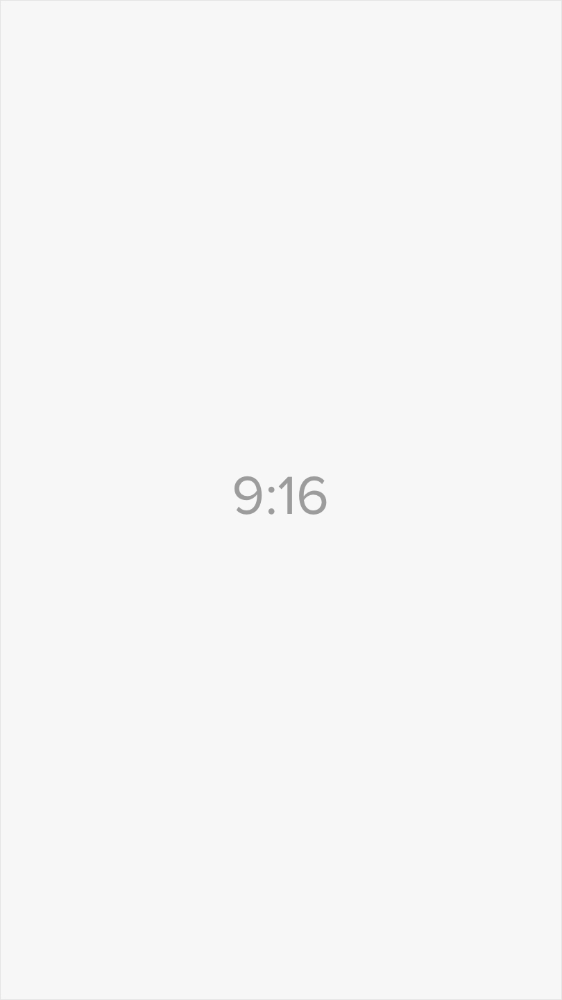

Bio:
Hello, I'm Kaloyan, a student from Bulgaria. I'm currently studying at my dream school - TUES.
I have been interested in technology since I was 3 years old. I still remember myself using my dad's computer running Windows XP. Playing music on YouTube and playing games.
When I got my first tablet in 1st grade, I was probably the happiest kid alive. It was't anything special, it was a non-branded Chinese tablet for $50 from the local hypermarket. That was the moment I touched modern technology. I've made my first Google Account which me and my cousin were using.
Since I was 7, I thought that I don't need a PC and the future is portable. Well, I was both right and wrong. I still belive the future will be mobile, but we haven't reached that point, yet!
But in 2016 I returned to my roots. I got the old XP machine from my father, And I decided that I want to study at TUES and I want to become a programmer. I started disassembling my PC, installing different OSes.
In 2017 2 big things happened: I made my Bulgarian YouTube channel and I bought my first PC (yes a pre-build which I made into a beast).
And 2018/2019 were the most important years. I started studying even harder. Most of my family didn't believe me, because I wasn't the best in literature. But I showed them that they were wrong by getting 89.5/100 in Literature and 95 on my favorite subject - Math.
And now in 2020, I've graduated 8the grade with GPA 4.0 (6/6) at TUES. And I know it's going to get harder every year but I'm ready to fight everything. And win at the end! Because the most important thing in the world is to:
Never give up!
Qick info:
Name: Kaloyan Doychinov
Age: 14
Occupation: Student at TUES Bulgaria
Skills: C, C++, HTML/CSS, JS, PHP, MySQL